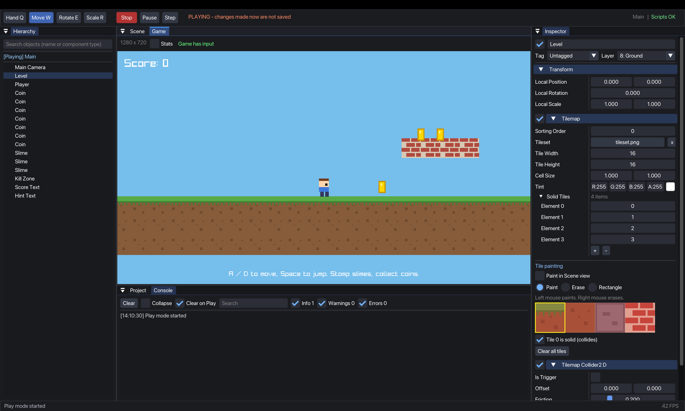

Make 2D and 3D games
with real code.
Strata is a game engine for 2D and 3D with scenes, components, inspectors and a hierarchy. Scripts are plain C# in your own code editor, and they hot reload while you work.
Download Strata Hub for macOS
What is inside
A real editor
Hierarchy with search, Scene and Game views, Inspector, Project browser, Console, undo and redo, and play, pause and step.
C# scripts
Write components in VS Code or Rider. Strata compiles them and hot reloads on save. Public fields show up in the Inspector.
2D and 3D physics
Rigidbodies, colliders, triggers, collision events and raycasts in both 2D and 3D. 3D uses BepuPhysics.
3D scenes
Cubes, spheres and capsules or your own .obj and .gltf models, lit by directional, point and spot lights. Fly around the scene, move, rotate and scale with handles.
Tilemaps and animation
Paint tiles right in the Scene view, set which tiles are solid, and animate sprite sheets with clips.
UI and audio
Text, buttons, panels, images and progress bars that anchor to the screen, plus sound effects and music.
Build and ship
One command packages your game as a standalone app that runs without the editor. Games you make are yours.
Install
- Download the zip above and open it. Move
Strata Hubto your Applications folder. - First launch: Strata is not yet notarized by Apple, so macOS blocks it the first time. Try to open it once, then go to System Settings → Privacy & Security, scroll down and click Open Anyway. You only do this once.
- Create a project in the Hub. The 2D Platformer demo or 3D Roller ball demo templates are a good place to start. Opening a project starts the editor as its own app (Strata), like Unity Hub opens Unity. The Hub stays open.
Prefer the terminal? Run this once instead of using Privacy & Security:
xattr -dr com.apple.quarantine "/Applications/Strata Hub.app"
A script looks like this
using System.Numerics;
using Strata;
public class Mover : MonoBehaviour
{
public float Speed = 5f; // shows up in the Inspector
Rigidbody2D body;
public override void Awake() { body = GetComponent<Rigidbody2D>(); }
public override void Update()
{
body.Velocity = new Vector2(Input.GetAxisRaw("Horizontal") * Speed, body.Velocity.Y);
}
}